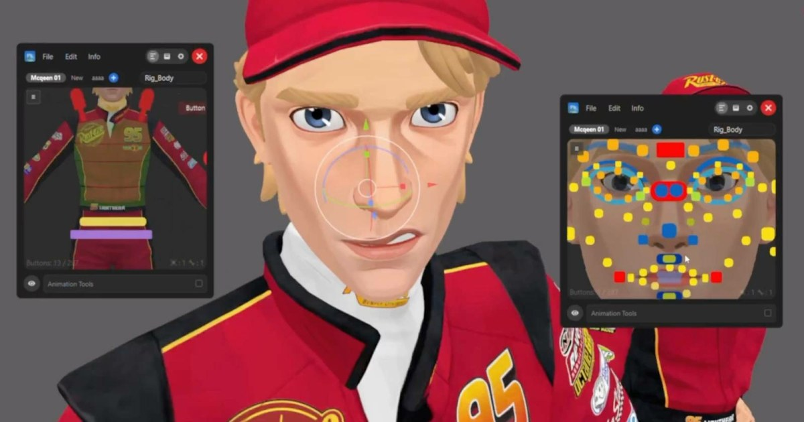

BGEN Picker：Blender／Maya 共用的角色控制選取介面
BGEN Picker 支援視覺控制器、滑桿、多角色 picker 與腳本按鈕，用介面降低複雜 rig 的操作成本。

綁定 ★★★★☆
完整分析
技術／流程變更
工具可拖放建立 picker 版面、加入自訂形狀與顏色、控制滑桿、腳本按鈕與快捷鍵，也支援多角色配置並可匯入匯出 picker。
Production 影響
在角色動畫製作中，picker 能把複雜 control rig 的操作入口標準化，減少動畫師搜尋 controller 與記憶命名的時間，對外包交接也更清楚。
導入測試與限制
效能與大型 production rig 的相容性目前主要來自產品描述；導入前應測試 namespace、reference、多人共用設定與版本管理。
BRIEF｜來源已驗證；證據深度較有限，完整分析會明確區分已知資訊與待驗證事項。